Virtual Nekuomanteia
A hypertextual VR presentation by Stephanie Tripp The University of Tampa
Virtual Nekuomanteia is an experimental immersive essay on the long history of media in the age of virtual reality. As Friedrich Kittler notes, “The realm of the dead is as extensive as the storage and transmission capabilities of a given culture.” Virtual Nekuomanteia traces this realm across a series of virtual reality (VR) spaces that correspond to ancient portals to the underworld. It invites the user traversing these spaces to reflect on a media history deeply entangled with necromantic rituals and deeply phantasmatic. The experience encompasses four spaces that graft places meaningful to my life onto the Hellenistic world’s four sacred portals to the realms of the dead–Acheron, Avernus, Heracleia Pontica, and Tainaron. The aim of the experience is to conjure a collaboration among all those within in the space—living or non-living—and the technologies that sustain the encounter.
Developed in the Unreal game engine, the work is optimally experienced in a VR headset as a multi-level interactive environment. In the VR experience, the user traverses the essay world through physical movement, teleportation, and encountering objects that trigger text, audio, video, and animated events. One can move through the essay sequentially or select different level experiences from a menu accessed via a hand-held motion controller. For this web-based experience, the game levels are arranged as narrative sections that include text, high-resolution images, audio, video, video panoramas, and video captured from a VR headset.
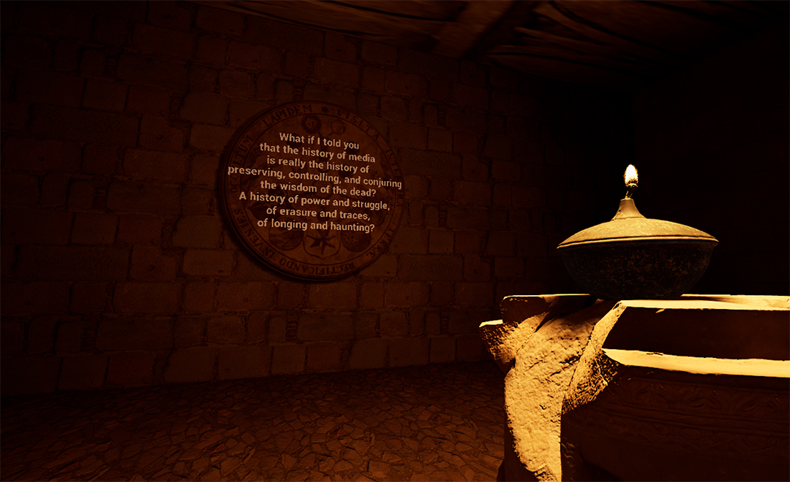
Introductory Portal
You find yourself in a moonlit courtyard. "Virtual Nekuomanteia" appears before you in large 3D letters, then disappears. Before you is a doorway. To its left are two vases, and if you grab the larger one, you are transported to the Credits level. To the right is a stone plinth with two small vases on top. On the wall above the plinth is an introduction similar to the one that appears at the beginning of this online version and instructions for navigating the project in VR. The doorway leads to the inner portal.
Inner Portal
The room beyond the door is lit only by a small oil lamp on a pedestal. On the wall to the left is a large map. To the right is what appears to be an open crypt with objects inside. Straight ahead, beyond the pedestal, is a large, round tablet on the wall with figures and inscriptions in Latin.
A closer look at the map reveals the locations of what classics scholar Daniel Ogden identifies as the four major nekuomanteia of the ancient world: Acheron in western Greece, Lake Avernus near Naples in what is now western Italy, Tainaron on a peninsula in southern Greece, and Heracleia Pontica along the southern coast of the Black Sea.
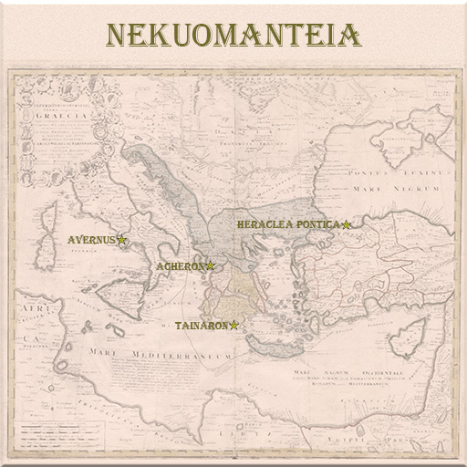
As you draw nearer to the crypt, you can peer inside to see an assortment of media technologies: a telephone, a copy of the London Times, a gramophone, a video camera, some audiocassettes, a smartphone, a tablet, and an old keyboard. Your proximity triggers text to appear on the wall behind the crypt. It's a quotation from Friedrich Kittler: "The realm of the dead is as extensive as the storage and transmission capabilities of a given culture."
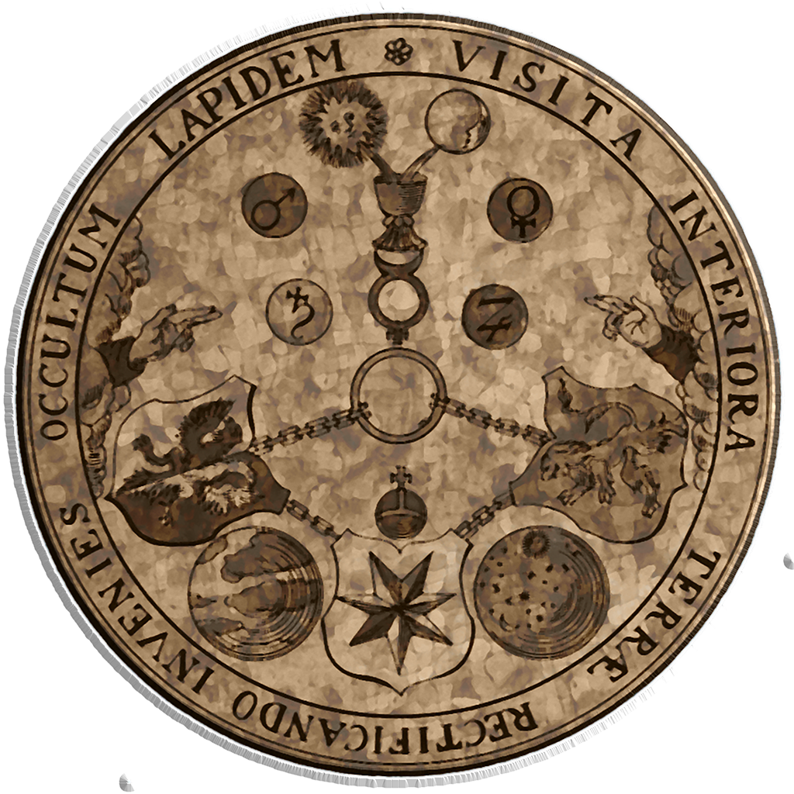
The round tablet on the far wall is based on a seventeenth-century Hermetic cryptogram. As you approach it, text appears in front of it: "What if I told you that the history of media is really the history of preserving, controlling, and conjuring the wisdom of the dead? A history of power and struggle, of erasure and traces, of longing and haunting?"
In a dark corner to the left of the tablet, you spy an ancient grave marker. As you move closer, it begins to glow. Some text appears: "Are you ready to descend to the realm of the dead?" If you navigate directly to the marker, your screen fades to black. A moment later, you find yourself in what looks like Plant Park on the campus of The University of Tampa.
Original level music composed by Thomas Cohen and used with permission.
Headset recording of introductory portal.
Tampa
You hear distant traffic and a fountain's roaring splashes. This downtown riverfront park seems familiar, yet strange. You wonder why a pair of iron gates block the sidewalk ahead. As you turn to the right, you see a large structure that appears to have been torn from a Gothic ruin and dropped into the park from above. As you walk toward it, you see an ibis in the grass near a large Taro plant.
Ambisonic soundscape.
The ibis
You walk over to the ibis, and as you draw near, a series of text blocks is projected above it. The text states:
The University of Tampa sits along the banks of the Hillsborough River. The river flows 60 miles from the Green Swamp, a critical watershed that feeds four rivers and recharges the network of underground water known as the Floridan Aquifer.
Florida lies atop a bed of porous limestone, and thousands of miles of subterranean caverns lie beneath the northern two thirds of the state. In many of Florida's swamps, sinks, and springs, crevices lead to the aquifer's extensive, winding underground world.
The ancient Greeks believed subterranean caverns to be portals to the realm of the dead. The River Acheron in western Greece was a celebrated passage by which the dead were ferried to the underground, often accompanied by the messenger god Hermes, sovereign of communication and writing.
Hermes's Egyptian counterpart, Thoth, also presides over writing and communication with the dead. Thoth bears the head of an ibis, a wading bird common along both the Nile and the Hillsborough.
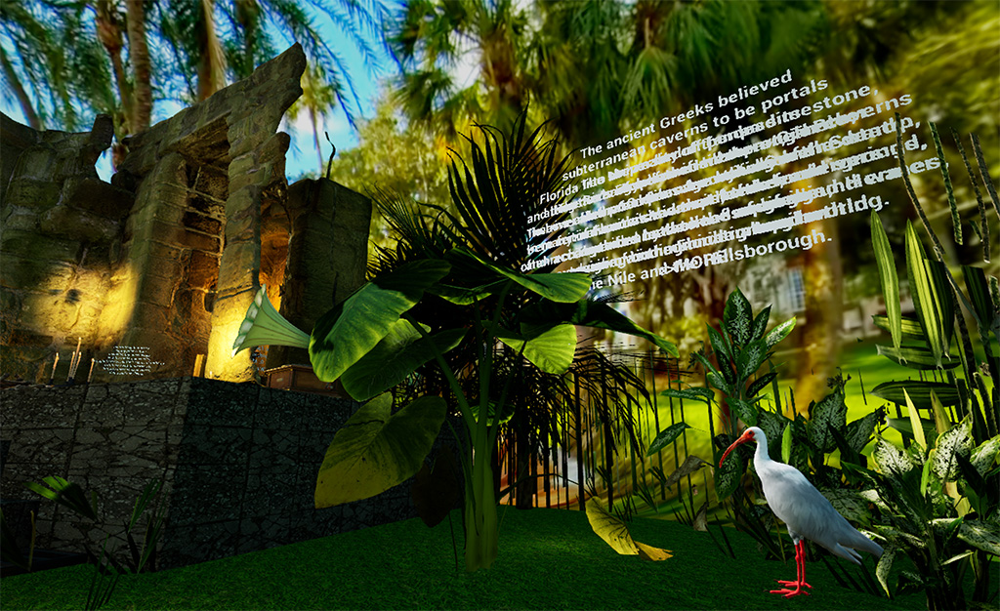
Gramophone mix by Stephanie Tripp.
Some books, a gramophone, and a key
You leave the ibis, and turn toward the Gothic structure. As you approach, you see a record begin to spin on the phonograph. As you listen to the recording, you look at some old books and papers nearby. One tucked into a nook presents you with a passage from Charles R. Maturin's Melmoth the Wanderer:
Behold, there are those who, being speechless, yet speak--who, being dead, are yet alive . . . Hear them! Take the pen in thine hand, and write.
You pick up a fountain pen near the gramophone, and a block of text appears:
Institutions that arose during print culture, including the mass media and the modern university, struggle to reconcile their claims of authority with their need to incorporate hitherto unrecognized voices, living and non-living.
The phonograph recording ends, and you look down to discover a glowing golden key where the pen had been. You grab the key, and head to the gates to see if there is a connection. On the way, you notice a pile of bones on the sidewalk, and one of them is glowing. You make a note to investigate after you try the key. The gate's lock refuses the key. "The gatekeepers praise your determination," a message reads. You look down for the dropped key, and you notice a wooden chest has appeared on the other side of the gate. You can touch it through the gate, but it will not open. You give up for now to return to the glowing bone on the sidewalk. When you pick it up, it presents you with this quotation from a composition scholar named Matthew Wilson:
Because so little has changed . . . the form of the research paper has fossilized. . . I have heard it said, derisively . . . that most college research writing involves "carting dead bones
from one graveyard to another."
Exploring the area around the gate more closely, you notice a piece of paper in a trash can. Here's what it looks like:
Across the sidewalk from the trash can is a lamp post and a green bench. You walk up to the bench, and suddenly a skeleton is reclining on it. It holds a smartphone in its bony hand. Next to it on the bench is an old printer with a sheet of paper on top and some bones inside of it. On the far side of the printer is a stack of old books. Hovering over the printer are the words, "ChatGPT assembled these bones into a term paper in 35 seconds." You notice a glowing key on top of the stack of books. You walk over to the gate, and try a second time. "Not a lot of effort there, eh?" reads the message as the key tumbles from the unopened lock. The chest beyond the gate has opened a crack, but it won't budge any further.
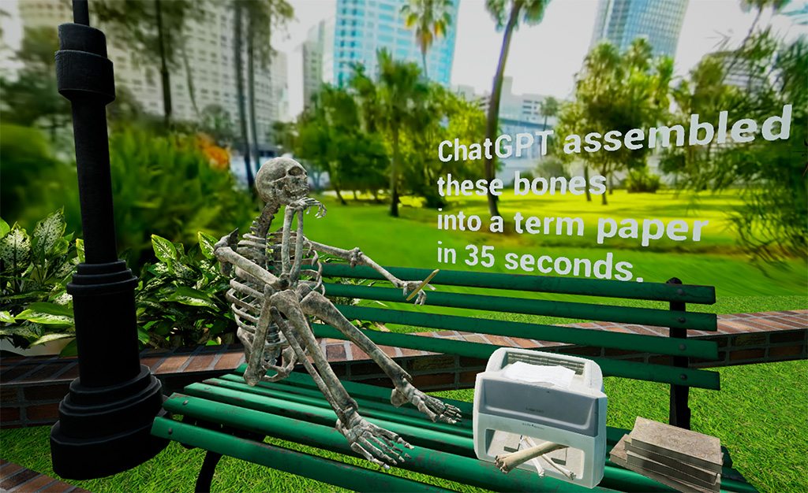
You decide to explore the Gothic structure further. In the center are a pile of bones, a skull, and candles. On the far left of the structure sits a magic lantern. As you draw near, the projector illuminates the screen in front of it. As the video begins to play, you notice another golden key has appeared next to the magic lantern. You resign yourself to trying again and head to the gate. Once again, the lock rejects the key, telling you that, "The gatekeepers say nice try, but no."
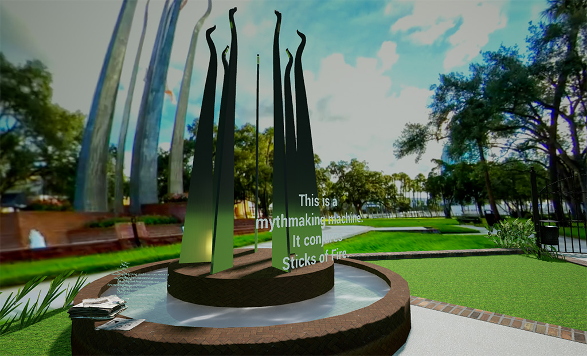
Sticks of Fire
You hear music in the distance, and you discover that a replica of the large metal scuplture has appeared near the center of the park. In front of the sculpture, a large block of text reads, "This is a mythmaking machine. It conjures Sticks of Fire." Some objects are arranged around the edge of the sculpture. To the left are some old newspapers. The first is an edition of the Tampa Bay Times. When you pick it up, you see this excerpt:
A recent column in the Tampa Bay Times reminds us that the name "Sticks of Fire" is more myth than reality. The place called "Tampa" existed near what is now Charlotte Harbor. The only people who knew what "Tampa" really means scattered or died off centuries ago.--Thomas J. Pluckhahn, Oct. 9, 2023
Next to the Times is a 1970s-era front page from The Tampa Tribune, which folded in 2016. When you grab the newspaper, this text appears:
Despite its dubious origins, the "Sticks of Fire" myth persists. Revered institutional gatekeepers perpetuate it. Community boosters embrace it, the media repeats it (sometimes critically, sometimes not). A sculpture on the University of Tampa campus commemorates it. Though mythmaking machines may strike us as harmless, even beautiful, diversions, they are mechanisms of power, conjuring our collective imagination. Yet mythmaking machines bring their own strange magic. This one sings in harmony with another, one that tells of a god who stole sticks of fire and gave humans writing.
Toward the front of the fountain, a small object is glowing. It appears to be a tool of some sort, the size of a letter opener, with a long metal blade with a curved hook at the tip. As you pick it up, you note that it reminds you of something. You hold it up and gaze toward the top of the fountain. Things start to become clear to you. Grasping the tool, you return to the gate and insert it into the golden lock.
"Way to disrupt the system!" flashes a message as the lock pops and the gates swing open. "Are you ready for the fallout?" The lid to the chest lifts up and words fly out and hang in the air above it: "Disinformation," "Doxxing," "Surveillance," "Online Scams," "Enshittification," "Conspiracy Theories," and "Toxic Discourse." At the bottom of the chest remains a final message:
Not everything is terrible, of course. Networked media can offer opportunity and connection. The challenge is to create practices better suited for our new media ecosystem.
You hear a horn beckoning. You turn away from the gates, and to your left you see a large boat has appeared. Stacks of books and a lantern rest on the bow. A skeleton sits, bony head lowered, near the stern. Mid-deck stands another skeleton holding a boombox over its head. You move closer to get a better look. The screen fades.
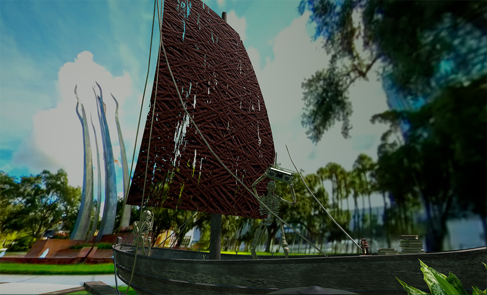
Acheron
A moment later, you hear strange harp music, and you find yourself on the boat as it travels through a dark, subterranean cavern. In the flickering torchlight, you can make out contours of rocks and waves and a faint opening far in the distance. Your peripheral visions catches the glow of an LED console on a boombox. You realize you are standing next to the skeleton. The screen fades once more.
Headset recording of Tampa level.
San Felasco
You find yourself in a small clearing surrounded by dense woods on one side and murky water on the other. You are shaded from the afternoon sun, but shade can't stop the unrelenting humidity of a North Florida summer. You hear the buzz of insects and the chirps of frogs.
Ambisonic soundscape.
The figure in the jar
As you survey the ground around you, your eye catches the gleam of glass. On the ground at the base of a dead tree you see a jar, and in it a tiny, very old woman. As you approach the jar, this text appears:
Apollo granted the Sibyl of Cumae a life span of a thousand years. Because she spurned his advances, the god noted that she forgot to ask for eternal youth, and he let her age and shrivel to a size so small she was confined to living in a jar. Still, her prophetic voice remained powerful, and from her cave deep in Lake Avernus, she guided Aeneus through the realm of the dead.
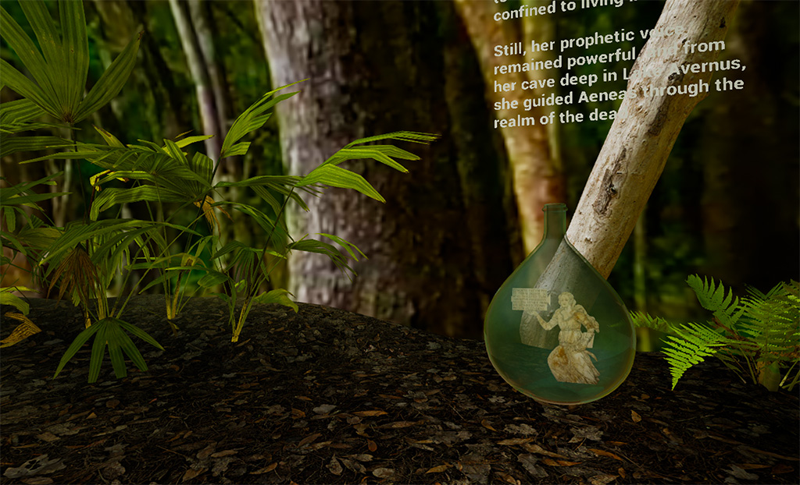
To the left of the jar, on top of an uprooted tree stump, rests a small spiral notebook. When you pick up the notebook, some text appears:
San Felasco Hammock Preserve State Park west of Gainesville is known for the web of seeps, sinks, and streams created by a network of underground caves. Within its boundaries, four blackwater streams disappear underground through sinks.
You turn away from the stump and survey the area. Along the edge of the water is a broken pine tree, and, beyond that, a thicket of saw palmetto. Among the palmettos, you see a green glow. As you draw closer to investigate, you realize the glow is coming from an antiquated personal computer on top of a wooden crate. Some text appears in front of the crate:
The sinks, springs, and underground caverns of North Florida became an important part of my personal and intellectual life when I attended graduate school at the University of Florida in the 1990s. In SCUBA gear, I explored the cavernous openings to underground labyrinths. I learned of the region's international reputation as a cave diver's paradise. It was through the work of my dissertation director, Greg Ulmer, that I first learned that the naturalist William Bartram wrote about the region in his travels, and that his description of its many springs and underground streams may have inspired some of Samuel Taylor Coleridge's passages in Kubla Khan. I grew to appreciate how the particularities of a place—its topography, hydrology, structures, plant life—could open a space for generative thought. It was there amid the sinks and swamps of North Florida where, studying Ulmer's theories of electronic post-literacy, or electracy, I began to think hard about the history of media, and in doing so, long before I ever realized it, launched my career in virtual necromancy.
Theuth (Thoth) and the Cicadas
To the right of the computer, along the water's edge, stands an ibis that appears identical to the one in the park along the Hillsborough River. As you come close, a scroll at its feet begins to glow. Next to the scroll, an insect periodically beats its wings. You pick up the scroll, and this text appears:
Jacques Derrida's reading of Plato's Phaedrus remains a key text in media theory. The Phaedrus is well known for its recounting of Theuth's presentation of writing to the king of the Egyptian gods, a gift described as a pharmakon—both a poison and a cure. Can there be a more apt reference on a 21st-century virtual necromancer's list of incantations? Yet what drew me back into "Plato's Pharmacy" most recently was not the pharmakon, but the cicadas. Scholars credit Plato with producing two more or less original fables, and they appear together in the Phaedrus: Theuth's gift of writing and the cicadas that sing along the banks of the river Ilissus. The cicadas were once people who, in devoting themselves to revelry and song, died of thirst and starvation. The muses took pity on the dissipated humans and transformed them into sacred insects whose lives were devoted to song. Derrida notes that the fables appear together midway through the dialog "in the opening of a question about the status of writing." Lured away from the city by the summer heat and lulled by the song of the cicadas, Socrates and Phaedrus rest in the shade along the river. It is there that Phaedrus produces from beneath his cloak a scroll that contains a speech about love written by the sophist Lysias. "Writing is thus already on the scene," Derrida states. "The incompatibility between the written and the true is clearly announced at the moment Socrates starts to recount the way in which men are carried out of themselves by pleasure, become absent from themselves, forget themselves and die in the thrill of song." This question of writing is posed in a scene of pleasure and of play. Perhaps, even, in the space of a game.
The Golden Bough
Looking back toward the woods, you see some ferns. Next to them, the ground slopes upward sharply into a tangle of bushes. You see another wooden crate, and as you approach it, you notice that two books on the top are glowing. You pick up the book on the right, and this text appears:
The Golden Bough, first published in 1890, greatly influenced Western ideas on culture and anthropology. Its author, James George Frazer, argued that human understanding of the world evolved from magic to religion to science. Thus, he reinforced a hierarchy in which scientific method prevailed over literature, rhetoric, and other modes of thought with ties to Hermes. Frazer's key premise, however, is based on a misreading of the story of the golden bough in Virgil's Aeneid.
When you pick up the second book, you see a passage from the Aeneid in which Aeneas asks the Sybil of Cumae about the challenges of descending to the underworld. She replies:
The gates of hell are open night and day; Smooth the descent, and easy is the way: But to return, and view the cheerful skies, In this the task and mighty labour lies. If you so hard a toil will undertake, As twice to pass th'innavigable lake; Receive my counsel. In the neighb'ring grove There stands a tree; the queen of Stygian Jove Claims it her own; thick woods and gloomy night Conceal the happy plant from human sight. One bough it bears; but wondrous to behold! The ductile rind and leaves of radiant gold: This from the vulgar branches must be torn, And to fair Proserpine the present borne
As you pause to mull over the heroic couplets of Dryden's seventeenth-century translation, a follow-up message beseeches you: "Find the golden bough!"
You look away from the books, and your eye is drawn immediately to the right, where a large image has materialized against an embankment. It is a black and white engraving of a bearded man wearing robes and a pointed cap and carrying a globe-like scepter. Beside him are images of the sun and the moon bearing human faces. Below the image is some text:
Hermes Trismegistus, a syncretic hybrid of the Greek Hermes and Egyptian Thoth, is associated with writing, philosophy, prophecy, and communication with the dead. Writings attributed to him, including the Corpus Hermeticum and the Emerald Tablet, form the loose system of beliefs and practices known as Hermeticism. Renowned scholars from the 15th through 17th centuries revered Hermetic text as fonts of ancient wisdom. Isaac Newton—mathematician, physicist, and alchemist— translated The Emerald Tablet.
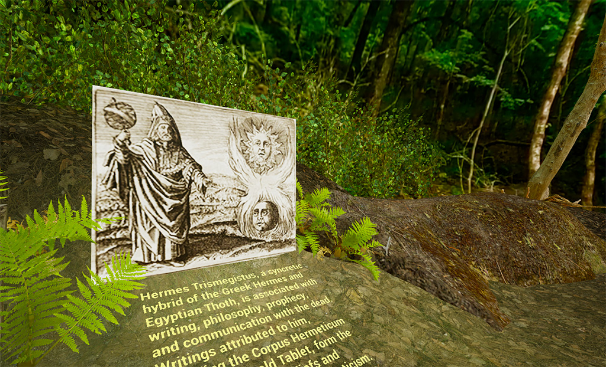
Calls from the water
After you finish your examination of the image of Hermes, you survey the scene for the golden bough. You focus your attention on a tree to the right of the image of Hermes Trismegistus. Amid the overhanging foliage, you see a shimmering golden branch. You move close, reach up, and grasp it. You hear an eerie chant. It sounds as though it is coming from the water. You turn and see the once-bright light over the water has dimmed. Text, bathed in greenish light, is scrolling up from the murky surface:
Deep was the cave; and, downward as it went From the wide mouth, a rocky rough descent; And here th'access a gloomy grove defends, And there th'unnavigable lake extends, O'er whose unhappy waters, void of light, No bird presumes to steer his airy flight; Such deadly stenches from the depths arise, And steaming sulphur, that infects the skies. From hence the Grecian bards their legends make, And give the name Avernus to the lake.
Below, a vortex appears near the shore. A strange glow beckons from the depths. Grasping the golden bough, you move to the edge of the sink. You aim your teleportation lasso into the middle of the vortex. You see the water around you. The screen fades to black.
Passage through Avernus
In the dim, aqueous light you glimpse the contours of bony arms reaching up for you from the depths. You look up and watch the sun receding through the dark waters overhead. The screen fades again.
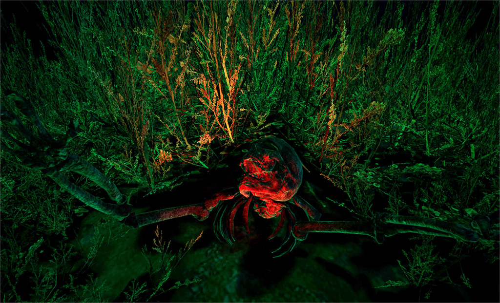
Headset recording of San Felasco level.
Westport: The Sacred Clearing
You are standing in a clearing in the woods. Around you are giant white pines, oaks, birches, and maples. You see the gold and russet of autumn leaves. Nearby, granite ledges are layered with tree roots, moss, and leaf litter.
Ambisonic soundscape.
A scroll and some mushrooms
You turn to the right and see a scroll nestled among the moss on a low embankment. You pick it up, and some text appears:
For the twelfth labor of Heracles, the hero was tasked with kidnapping Cerberus, the three-headed watchdog of the Underworld. Accounts vary on where Heracles made his ascent with the beast, but several place it at Heraclea Pontica, a city on the southern shore of the Black Sea. When Heracles dragged Cerberus up from Hades, the hell hound—shocked by the sun's light—vomited violently. From the vomit sprung Aconite, a poisonous plant also known as wolfsbane or monkshood. Aconite grows wild in New York State, but it's uncommon. In the Adirondacks, chthonic poison assumes the form of toxic mushrooms.
To the left of the scroll, you see a large mushroom. You pick it up, and read this message:
Am I a poison? Or am I a cure? Or am I both? Technology is never far from magic. Conjure me.
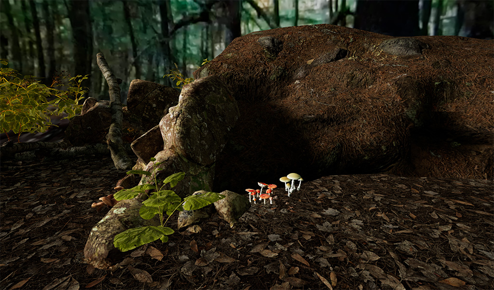
You scan the forest floor for more mushrooms, and you notice there are many. One cluster to the left of the clearing entrance catches your eye: a group of bright red mushrooms next to another of a pale brown hue. As you approach, some text appears:
Mushrooms of the genus amanita are common in the Adirondacks. The colorful amanita rubescens—the spotted mushrooms depicted in story books—are a fixture in our Westport woods in late summer. Also found in Adirondack forests are two less showy—but fatally toxic—cousins, amanita phalloides and amanita virosa, commonly known as the Death Cap and the Destroying Angel. Whether deadly or merely indigestible to humans, fungi of the genus amanita are a boon to woodlands. According to a guidebook published by Syracuse University, they serve as "mycorrhizal partners" to many species of trees in the Adirondacks, providing them with moisture and critical nutrients. Recent research suggests that trees can communicate with one another through common mycorrhizal networks. Popular accounts have referred to the subterranean networks as the "Wood Wide Web."
As below, so above
Turning away from the clusters of amanita, you look toward the center of the clearing. In front of you is a black cauldron sitting on a campfire. As you approach, you see a bubbling green broth inside. Above it are the words, "What is below is like what is above, and what is above is like what is below." The text is attributed to the Emerald Tablet. A second message appears: "I conjure thee: Conjure thrice above, then pass below!" Sounds like a challenge, but how to approach it?
Reflecting on the cauldron's message, you remember that you have seen conjure appear somewhere else. You walk over to where you dropped the large mushroom and retrieve it from the ground. You return to the cauldron and toss it in. As the mushroom disappears into the boiling broth, a glowing green sphere appears over the opening. Within it are the words, "You have conjured the pharmakon!
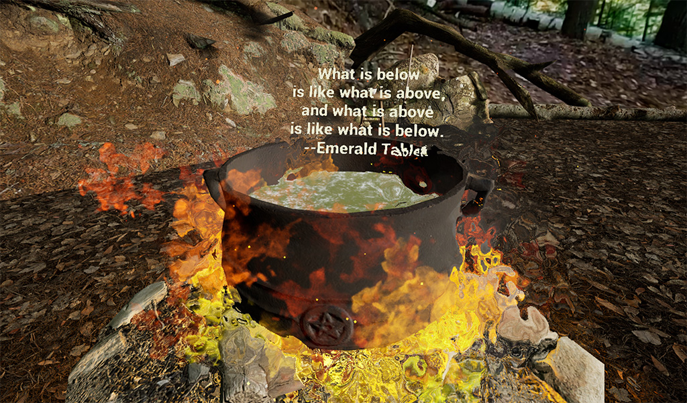
The piano harp
You survey the clearing for other things to conjure. Turning to your left, you see an old piano harp. Its keys are rusted, its wood rotten. Dried leaves are caught in its strings. Yet it seems to demand something of you. You move closer, reach out and pluck one of the strings. Then another. The forgotten instrument, it seems, is full of sounds.

As you listen to the strings resonating, you look up see hovering above you a cluster of colorful, spinning spheres, like a microcosmic solar system in the forest clearing. You recall the sphere that appeared above the cauldron. Is there a connection? You decide to return and explore further. As you approach the cauldron, a glowing blue sphere appears, with the words, "You have conjured the spheres of attunement!"
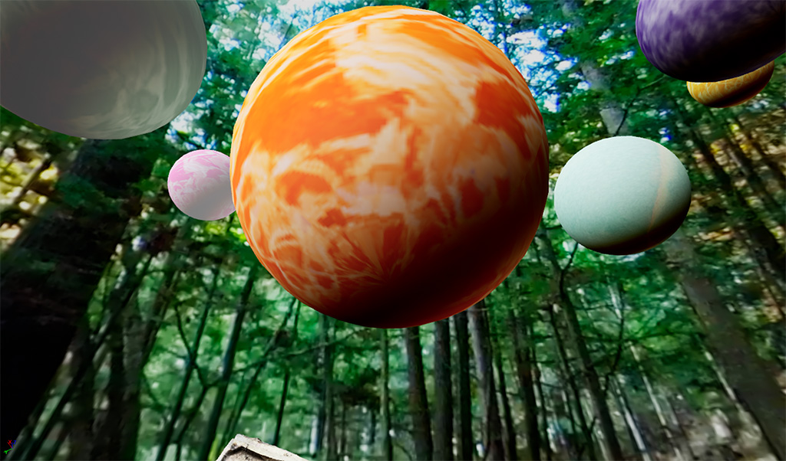
A book of spells and the Music of the Spheres
In a corner of the clearing, you see a wooden chest and, to the right, a broom. On top of the chest are a mortar and pestle, a small vial, a book titled Modern Spells, some mushrooms, a yellowed diagram and a large black feather. You grab the broom handle, but nothing happens. A message flashes, "Just kidding!" You pick up the book, and some text appears:
Conjure (verb)(Oxford English Dictionary)
- to swear together; to conspire.
- to constrain by oath; to charge
or appeal to solemnly.- to invoke by supernatural power, to effect by magic or jugglery.
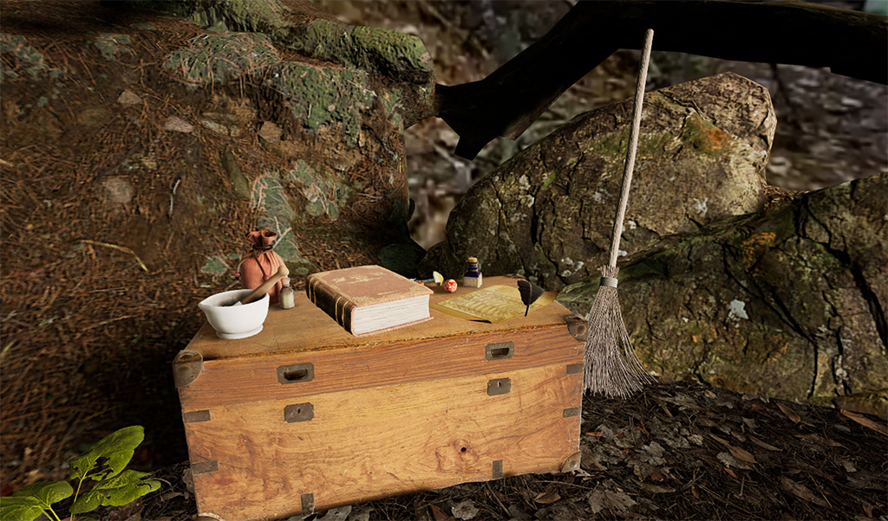
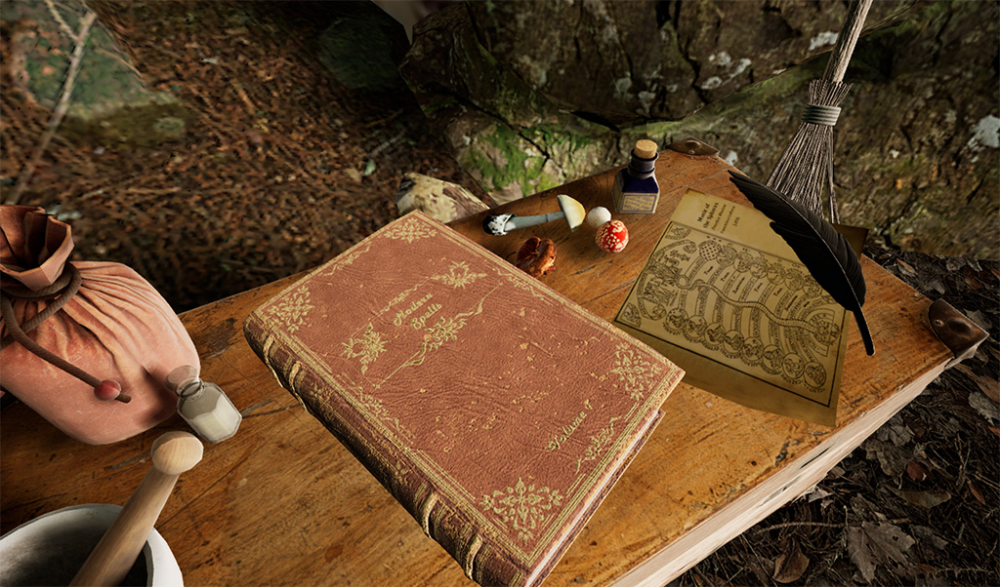
You take the book to the cauldron and throw it in, but it is ejected. A red sphere appears with the message:
Conjure only what is sacred in this place: the pharmakon, the messenger, and the spheres of attunement!
You note that you have conjured two of the three: the pharmakon and the spheres of attunement. Now for the messenger. You return to the wooden chest to search for clues.
As you approach the chest, you notice that the diagram has started glowing, so you take a closer look. There are two columns of spheres and, although the document is written in Latin, you recognize a reference to the Greek god Apollo, and the names of muses and heavenly bodies. Some supplmentary text reads, "Music of the Spheres, Practica Musicae, Franchinus Gaffurius, 1496."
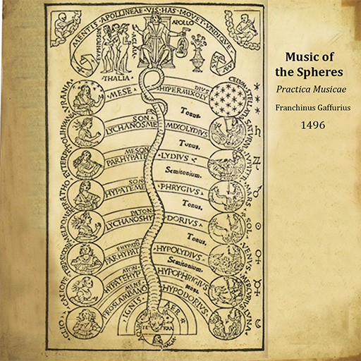
The black feather
As you examine the diagram, the black feather on top of it begins to glow. You pick it up, and these words appear:
Ravens are common year-round in the Adirondacks. Large and highly intelligent, they are mythologized in numerous cultures. In many, they are trickster figures who traverse the boundaries between life and death. In ancient Greece, they were associated with Apollo and prophecy, and they often served as messengers between the gods and mortals.
Noting the mention of "messengers," you grasp the black feather, walk to the cauldron and throw it in. A purple sphere appears, along with these words: "You have conjured the messenger!" After a brief pause, there's another message. It says, "You have conjured thrice above! Now be it so below!"
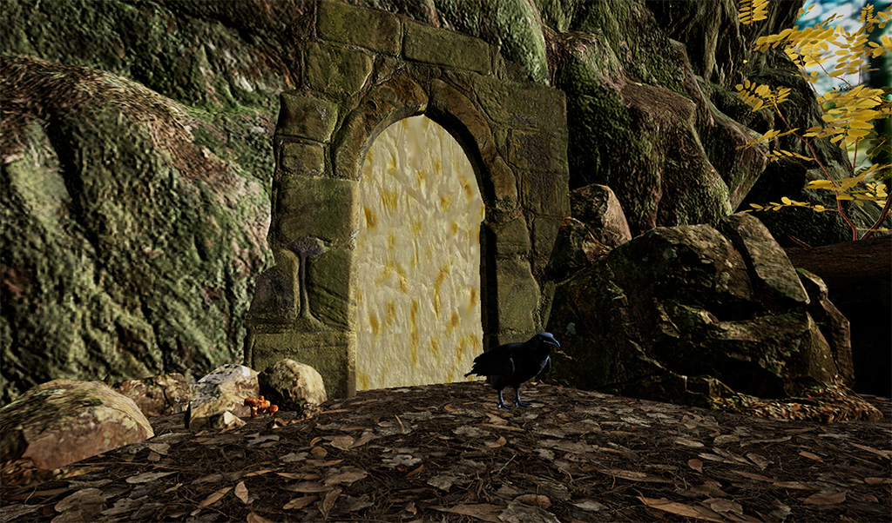
The opening
You look past the caudron, and you see that, at the far end of the clearing, a large, rocky ledge has materialized. In the side of the ledge is an arched opening lit by a golden glow. In front of it stands a raven. You aim your teleportation lasso at the opening. The screen fades to black.
Passage through Heraclea Pontica
You are on a wooden cart in a long, subterranean passage. You see a raven in front of you. You hear the baying of a hound in the distance. The screen fades.
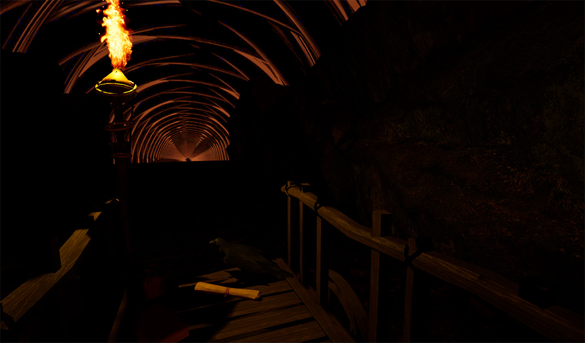
Headset recording of Westport level.
Noblewood
You find yourself on a sandbar surrounded by water on three sides. Behind you is some brush and woods beyond that. It looks like Lake Champlain, and you can make out the Green Mountains of Vermont in the distance. You hear the lapping of waves and the low engine of a ferry in the distance.
Ambisonic soundscape near brush.
Ambisonic soundscape on sandbar.
The tape recorder and the basket
With the long sandbar ahead of you, you look to the left. In the shadow of a shrub, there is a small crate. You move closer to examine it more closely. On top of the crate are an old tape recorder and a shallow basket with a cicada perched along the edge. Inside the crate are some audio cassettes and some animal bones. In the sand to the right of the crate lies the sun-bleached skull of a ram. The tape recorder is glowing, and you press the controls. You hear the song of the cicada. Some text appears:
In his book on ancient necromancy, Daniel Ogden notes the parallels between the Sibyl of Cumae and Tithonis, the lover of Eos, goddess of the dawn. Eos persuaded Zeus to give Tithonis immortality, but she—like the Cumaean Sibyl— forgot to ask for prolonged youth. Tithonis shriveled to almost nothing but a chattering voice. Eos turned him into a cicada and kept him in a basket. Transformed and renamed Tettix, the cicada became a prophet and resided at the nekuomanteion at Tainaron. Ogden writes, "The cicada's affinity with necromancy is clear. It sang as a prophet. Just like a ghost, it derived from the earth, it was ancient and bloodless, and it was wise."
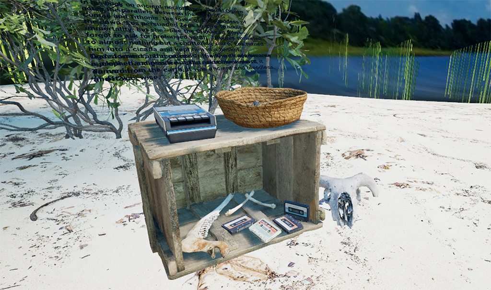
The television
You see a television set. As you approach, a test pattern begins to play. You grab the channel selector and a video plays on the screen.
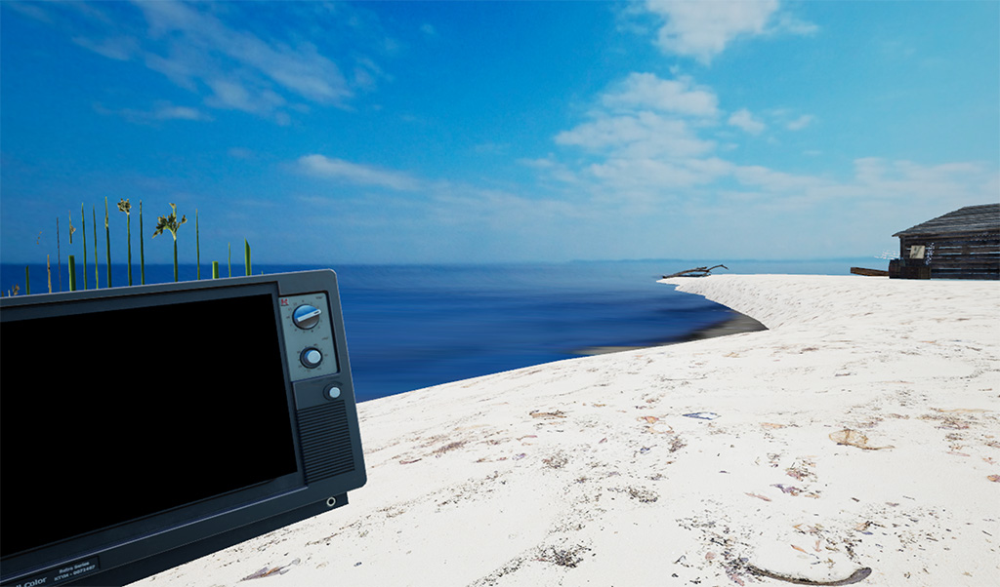
Video that plays on the television set.
The picnic
You see a green blanket spread along the beach. On it sit two glasses of red wine, a loaf of bread, an apple, and some cheese. Near a corner of the blanket rests a portable audiocassette player, which is bathed in a golden glow. You reach down to the panel of buttons on top, and apparently you hit the play button for the radio because you hear the sound of static mingled with chatter from various channels.
As you look up from the picnic spread, you notice that there's a wooden oar planted in the sand. It's glowing. You decide to pick it up and take it with you. It's a bit unwieldy, but it might come in handy.
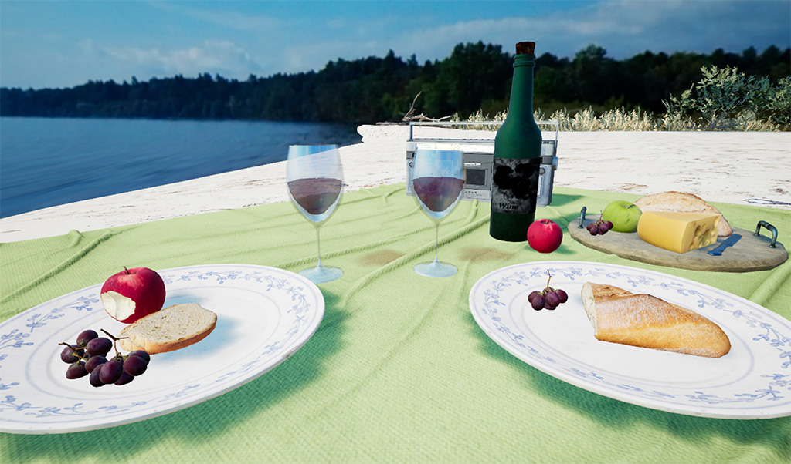
Radio static, tuning chatter, and two commercials.
Inside the lean-to
Looking down the shoreline, you see a lean-to. As you approach, you see a table inside. On it are a desk telephone from the mid-twentieth century and an early personal computer. You walk inside to explore. The telephone is glowing. You set the oar you are carrying gently on the table, and grab the telephone receiver. You hear a recording of the voice of Alexander Graham Bell.
The voice of Alexander Graham Bell.
You move toward the computer, and its screen lights up with colorful static. You see a 5 1/2-inch floppy disk, and you insert it into the computer's disk drive. A video plays on the screen.
Video that plays on the computer screen.
The rowboat
After you finish with the computer, you pan around for other places to explore. Looking toward the end of the sandbar from the lean-to, you see a wooden rowboat. As you get close, a message appears above the boat:
The ferry awaits. There is no sail. There is no engine. How will the journey commence?
You take a closer look inside the boat. On the seat in the center is a pair of VR goggles. You grab the goggles, but you cannot move them. A message appears: "I have so many things to share with you."
There's a small open keep in the rowboat's stern. Inside are some old consoles and a few games. One catches your eye. It's called Cybernautica: Hermes Rising. The blurb on the cover reads: "You are a CYBERNAUT—a techno-trickster loose in the underworld. Perform necromantic rituals and drag dead media up through the gates of hell!"
Seeing nothing else of note inside the rowboat, you walk back toward the lean-to. Remembering the oar, you retrieve it from the table and return to the boat. As you draw near, this message appears:
A single oar steers the cybernaut in circles.
Whatever journey the rowboat promises appears to require a second oar. But where is it? You set the oar down gently beside the rowboat and set off in search of its mate.
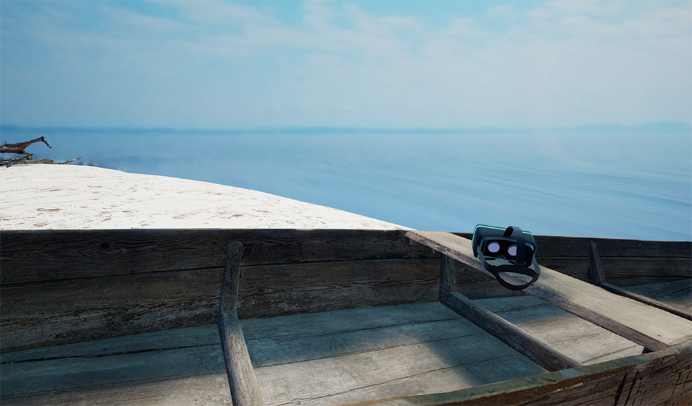
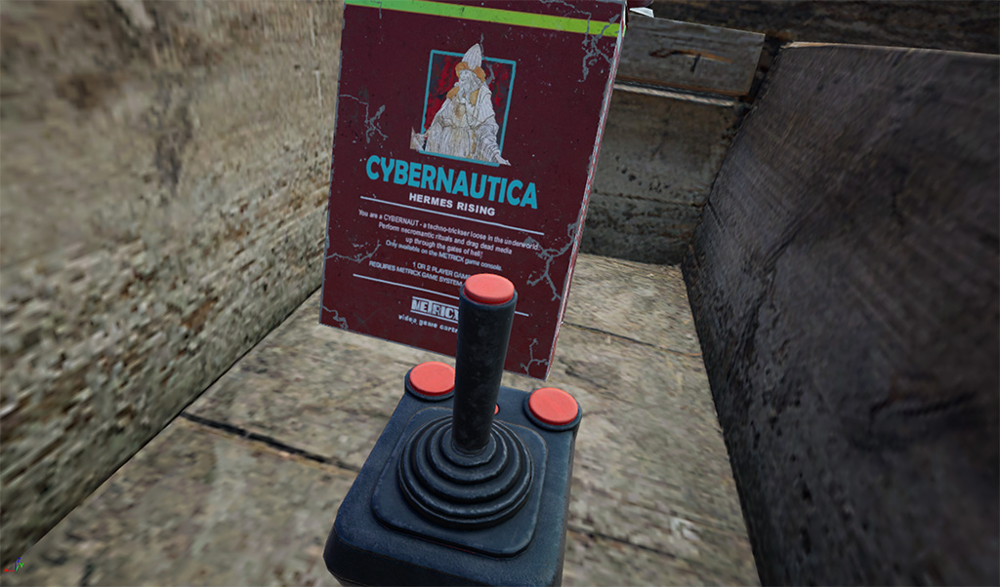
A map, a crate, and a camera
As you turn away from the rowboat, you notice a barrel behind the lean-to, and you walk over to investigate. On the barrel is an SLR camera, and next to that some 35mm slides. To the right of the barrel is a crate containing some LPs, a audio deck, an 80s-era portable music player, an early cell phone, a slide projector, and a film reel.
The top of the crate is propped up against the back of the lean-to, and pinned to it is an old map of Lake Champlain with place titles in French. A small circle of the map is highlighted, and within it you see a narrow sandbar jutting into the lake just below where the River Boquet empties into it. Some text appears to the right of the map:
In 1609, when Samuel de Champlain first traveled the lake that now bears his name, he mapped the rivers that fed the lake using names that described their suitability for navigation. Thus, the sandy river to the north appeared on his map as Au Sable. The name of the Boquet River, which flows into the lake at Noblewood Park, may be derived from the French bacquet, meaning "tub" or "trough." A shortened form, "le bac," can refer to a ferry, like the one that crosses Lake Champlain a few miles to the south— or like the one that bears the dead to the underworld.
You catch a glimpse of an object glowing to your left. You turn your head and see that a second oar is now leaning against the the wall. You grab it and head back to the rowboat.
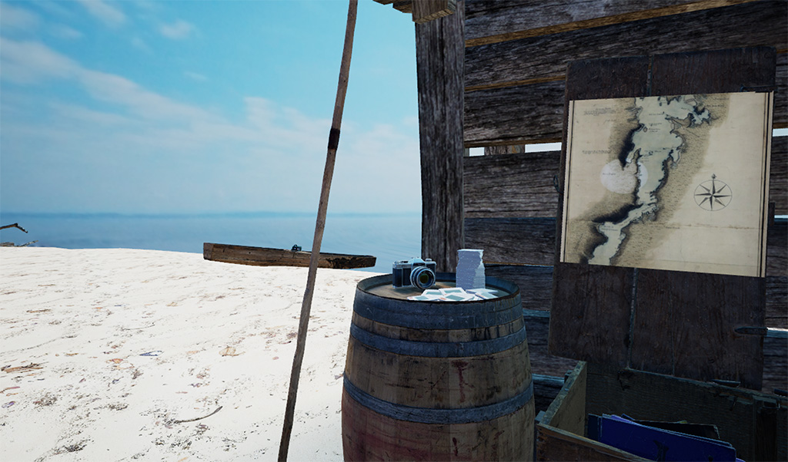
Holding one oar, you bend down and pick up the one that you left in the sand. A new message appears above the boat: "Come, cybernaut! The ferry departs!" Firmly holding both oars, you step inside the rowboat. The screen fades to black.
The Cybernaut's Passage
You are in the rowboat in the middle of a vast body of water. The moon hangs low and the sky is filled with stars. You are joined in your travels through the world of the dead by an array of media technologies. The screen fades.
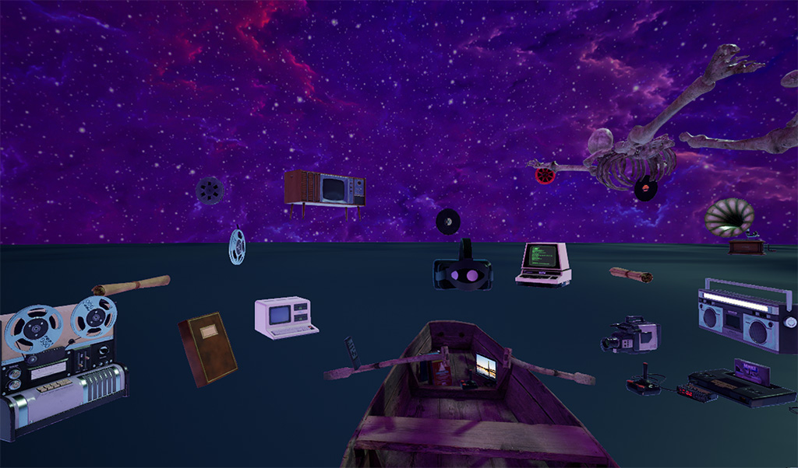
Headset recording of Noblewood level.
Back in the Portal
You find yourself back in the portal where you began this experience. Having already explored the rest of this space, you navigate to the left of the portal. On the wall in front of you, this text appears:
CREDITS
Written and produced by Stephanie Tripp
Original music by Thomas Cohen
This project was funded in part through a University of Tampa Research Innovation and Scholarly Excellence Award
© Stephanie Tripp 2024
This work is licensed via Creative Commons BY-NC-SA.
On the floor beneath the text are two jars. A message above the larger one instructs you to grab it to see the bibliography and detailed credits. You do so, and the screen fades to black.
Citations, Acknowledgments, and Credits
You find yourself in a cemetery on a cloudy, moonlit night. In front of you is a large pedestal with a gargoyle and a candleabara on top. In front of the pedestal are these instructions: "Visit markers throughout this space to view credits, citations, and acknowledgments."
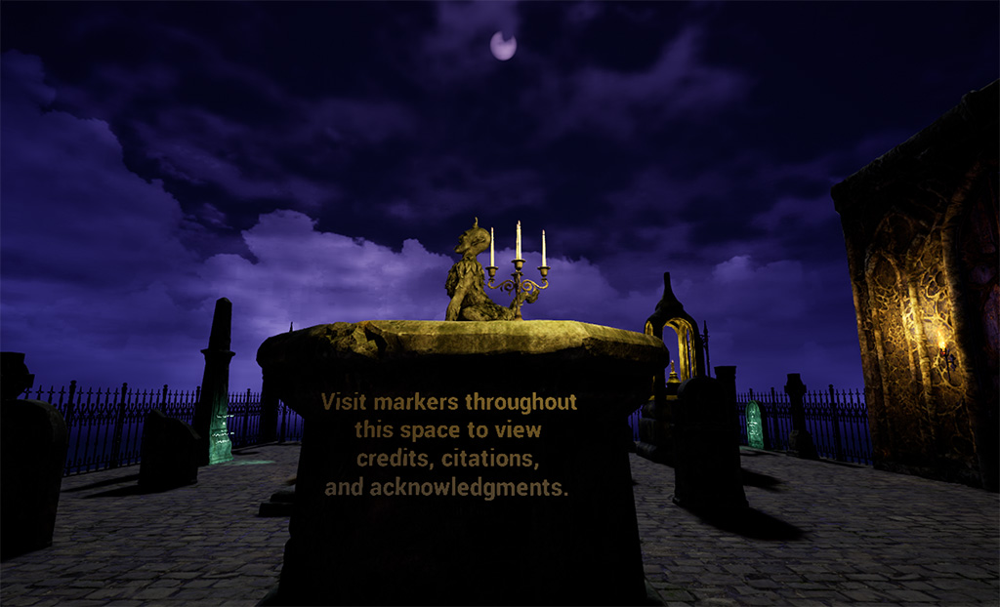
Headset recording of project credits space.
Acknowledgments
I am grateful to The University of Tampa for providing a semester's sabbatical in Fall 2023 to work on this project and for a Research Innovation and Scholarly Excellence (RISE) award that provided a summer stipend and some funding for travel and equipment.
I offer special thanks to colleagues at UT who tried out the project in VR headsets and provided valuable feedback on the experience: Robert Apiyo, Christopher Boulton, Jemaine Browne, Patrick Ellis, Amanda Firestone, Paul Hillier, Lauren Malone, and Alisha Menzies.
Thanks to Janet Scherberger and Elisabeth Parker for assisting with recording in North Florida, especially in helping lug gear on a hot, muggy trail through San Felasco State Park.
Learning to develop a VR project in Unreal Engine was a challenge I never could have met without the abundance of experts in the game development community who are incredibly generous with their knowledge. From that impossibly long list, I would like to name two whose video tutorials I drew on repeatedly: Jonathan Bardwell at GDXR and Charles at Prismatica Development. I've never met them, but they saved my sanity on several occasions.
Finally, I want to express my deepest thanks to Thomas Cohen, my husband and partner, for his creative collaboration and support. From providing original music, to being my go-to UX tester and proofreader, to being incredibly patient while I lost myself in VR Land for too many hours to enumerate, he has sustained me throughout this adventure.
Selected Works Cited
Angelou, Maya. "Still I Rise." Live Performance. 1987. YouTube.
"Artist-Naturalists in Florida: William Bartram." Florida Museum. University of Florida. Web.
Bell, Alexander Graham. Voice recording. 1885. National Museum of American History. YouTube.
Bessette, Alan E., Arleen R. Bessette, and David W. Fischer. Mushrooms of Northeastern North America. Syracuse, NY: Syracuse University Press, 1997.
"Can I fit my consciousness onto a 2-terabyte hard drive?" Query to Microsoft Bing CoPilot, powered by ChatGPT-4. May 2024.
Chambers Brothers. "Time Has Come Today." Audio recording. Columbia Records, 1967. Official YouTube site.
Collins, John. A Survey of Lake Champlain including Crown Point and St. John. Map. 1765. Lake Champlain Basin Atlas website.
“Conjure.” Oxford English Dictionary. 2013. Online.
Corpus Hermeticum. Trans. G.R.S. Mead. 1906. Internet Archive. Web.
Derrida, Jacques. "Plato's Pharmacy." Dissemination. Trans. and Introd. Barbara Johnson. Chicago: University of Chicago Press, 1981. 61-171.
DeSantis, Ron. Gubernatorial Inaugural Address, Tallahassee, Florida. Jan. 3, 2023. News 4 Jacksonville. YouTube.
Eliot, T.S. "Quartet No. 1: Burnt Norton." Audio Recording. "T.S. Eliot Reads Quartet No. 1: Burnt Norton." YouTube.
Emerald Tablet of Hermes. Trans. Isaac Newton. 1680. Internet Sacred Text Archive. Web.
Florida Department of Environmental Protection. "Streams-to-Sinks at San Felasco." Florida State Parks website.
Fowden, Garth. The Egyptian Hermes: An Historical Approach to the Late Pagan Mind. Princeton, NJ: Princeton UP, 1993.
Frazer, James George. The Golden Bough: A Study of Magic and Religion. 1922 abridged ed. Project Gutenberg. Web.
Glover, Donald. "Childish Gambino—This Is America." Video. YouTube.
Grondin, Jean. Sources of Hermeneutics. SUNY Series in Contemporary Continental Philosophy. Albany, NY: SUNY Press, 1995.
—. "What Is the Hermeneutical Circle?" (rev. 2017). Original appeared in The Blackwell Companion to Hermeneutics. Ed. N. Keane and C. Lawn. Oxford, UK: Blackwell, 2016, 299-305.
Havelock, Eric A. The Muse Learns to Write: Reflections on Orality and Literacy from Antiquity to the Present. New Haven, CT: Yale University Press, 1986.
Kittler, Friedrich. Gramophone, Film, Typewriter. Trans. and Introd. Geoffrey Winthrop-Young and Michael Wutz. Stanford, CA: Stanford University Press, 1999.
Kneese, Tamara. Introduction. Death Glitch: How Techno-Solutionism Fails Us in This Life and Beyond. New Haven, CT: Yale University Press, 2023.
Leffler, Warren K. Untitled black-and-white photograph of couple watching Vietnam War on television. Library of Congress. Published in The New Yorker, May 20, 1967. New Yorker website.
Marshall McLuhan—Digital Prophecies: The Medium Is the Message. Short documentary. Al Jazeera English, 2017. YouTube.
Maturin, Charles R. Melmoth the Wanderer. 1820. New York: Penguin, 2001.
Morrison, Toni. Beloved. New York: Alfred A. Knopf, 1987.
Ogden, Daniel. Greek and Roman Necromancy. Princeton, NJ: Princeton University Press, 2001.
—. "The Ancient Greek Orackles of the Dead." Acta Classica 44 (2001). 167-195. JSTOR.
Ovid. Metamorphoses. Trans. Brookes More. Boston: Cornhill Publishing, 1922.
Plato. Phaedrus. Trans. W.C. Helmbold and W.G. Rabinowitz. Library of Liberal Arts. New York and London: Macmillan, 1956.
—. Timaeus. Trans. R.G. Bury. Loeb Classical Library 234. Cambridge, MA, and London: Harvard UP, 1929. 16-253.
Pluckhahn, Thomas J. "How Tampa Came by its Name and What We Don’t Really Know." Tampa Bay Times website. Oct. 9, 2023. Web.
"Prouder, Stronger, Better." Ronald Reagan Presidential Campaign. Television advertisement. 1984. YouTube.
Royce, Carolyn Halstead. Bessboro: A History of Westport, Essex. Elizabethtown, NY, 1904.
This Is Marshall McLuhan: The Medium Is the Massage. Television documentary. 1967. Reelblack One YouTube channel.
Ulmer, Gregory L. "The Chora Collaborations." With Editorial Comments by Craig Saper, John Craig Freeman, and Will Garrett-Petts. Rhizomes 18 (Winter 2008). Imaging Place. Web.
Virgil. The Aeneid. 19 BCE. Trans. John Dryden. 1697. The Internet Classics Archive. Massachusetts Institute of Technology. Web.
Wilson, Matthew. “Research, Expressivism, and Silence.” JAC 15.2 (1995): 241-60. Web.
Production Credits
Virtual Nekuomanteia was written, designed, and produced by Stephanie Tripp.
Thomas Cohen composed original music for the opening portal and for vignettes throughout, and performed on bass clarinet, clarinet, and piano harp.
Virtual Nekuomanteia was created with Unreal Engine 5.2. This project includes many meshes, materials, and textures from Megascans and a few other providers on the Unreal marketplace that are used with permission under the Unreal Engine license.
HDRI backgrounds for the Tampa, San Felasco, Westport, and Noblewood levels were recorded in the field and edited by Stephanie Tripp, as were the ambisonic soundscapes.
HDRI backgrounds for the transitions following the Westport and Noblewood levels were produced using images from Adobe Stock under an educational license. Backgrounds for the transitions following the Tampa and San Felasco levels were produced using images from Polyhaven.com under a Creative Commons license.
Audio clips from Pixabay.com were used under a Creative Commons license to create several sound effects, including:
- A popping lock and creaking gates in the Tampa level.
- The buzz of cicadas in San Felasco and at the tape recorder in Noblewood.
- The howling and snarling of Cerberus in the passage between Westport and Noblewood.
- Radio static in Noblewood
Cackle of the Common Raven recorded at Grand Teton National Park, Wyoming, 2002, National Park Service, public domain, via Wikimedia Commons.
The magic lantern in the Tampa level was created by Experience Art Lab and is used under the standard Sketchfab license.
The gramophone in the Tampa level was created by Aleksey Kozhemyakin and is used under the Unreal Engine license.
The standing White Ibis in the Tampa and San Felasco levels is based on the Red Ibis model by rmilushev and is used under the standard Sketchfab license, and it was re-textured to represent the white ibis, which is of a closely adjacent species.
The white ibis appearing in the water in San Felasco is based on "White Ibis - Eudocimus albus" by MooreLab, has been re-textured, and is licensed under Creative Commons Attribution.
Images used to produce the Sybil of Cumae in the jar in San Felasco and the image of Hermes Trismegistus on the cover of the Cybernautica console game in Noblewood are from photographs of the tile floor of Siena Cathedral in Italy. The large illustration of Hermes Trismegistus in San Felasco is from The Alchemical Pleasure-Garden, an emblem book published by Daniel Stolz von Stolzenberg in 1624.
The animated cicada appearing in the San Felasco and Noblewood levels is by Bunnopen and is licensed under CC-BY-4.0.
The animated raven in the Westport level was created by WDallgraphics and is used under the Unreal Engine license.
The VR headset appearing in the Noblewood level is based on "VR Headset Free Model" by Vitamin and is licensed under CC-BY-4.0.
Use of AI
Free AI applications were used to produce media assets for the project in the following ways:
- The radio commercial audio asset in Noblewood used a free, AI-powered voice-changing application from Eleven Labs that altered voices for two short segments (less than 20 seconds each).
- Microsoft Copilot assistant (powered by ChatGPT-4) was prompted with the question, "Can I fit my consciousness onto a 2-terabyte hard drive?" Screen captures of the question and response were used in a video in the Noblewood level.
- A prompt of "the medium is the message" was fed into the Microsoft Copilot Design image-generation app (powered by Dalle-E). Screenshots of the prompt page and of the four images it produced were included in a video about Marshall McLuhan's well-known saying.